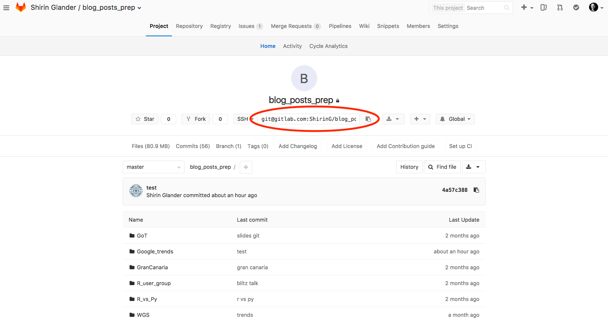

GitHub vs. GitLab
Git is a distributed implementation of version control. Many people have written very eloquently about why it is a good idea to use version control, not only if you collaborate in a team but also if you work on your own; one example is this article from RStudio’s Support pages.
In short, its main feature is that version control allows you to keep track of the changes you make to your code. It will also keep a history of all the changes you have made in the past and allows you to go back to specific versions if you made a major mistake. And Git makes collaborating on the same code very easy.
Most R packages are also hosted on GitHub. You can check out their R code in the repositories if you want to get a deeper understanding of the functions, you can install the latest development versions of packages or install packages that are not on CRAN. The issue tracker function of GitHub also makes it easy to report and respond to issues/problems with your code.
Why would you want to leave GitHub?
Public repositories are free on GitHub but you need to pay for private repos (if you are a student or work in academia, you get private repos for free). Since I switched from academia to industry lately and no longer fulfil these criteria, all my private repos would have to be switched to public in the future. Here, GitLab is a great alternative!
GitLab offers very similar functionalities as GitHub. There are many pros and cons for using GitHub versus GitLab but for me, the selling point was that GitLab offers unlimited private projects and collaborators in its free plan.
Tutorial
Migrating from GitHub to GitLab with RStudio is very easy! Here, I will show how I migrated my GitHub repositories of R projects, that I work with from within RStudio, to GitLab.

Beware, that ALL code snippets below show Terminal code (they are NOT from the R console)!
Migrating existing repositories
You first need to set up your GitLab account (you can login with your GitHub account) and connect your old GitHub account. Under Settings &Account, you will find “Social sign-in”; here click on “Connect” next to the GitHub symbol (if you signed in with your GitHub account, it will already be connected).
Once you have done this, you can import all your GitHub repositories to GitLab. To do this, you first need to create a new project. Click on the drop-down arrow next to the plus sign in the top-right corner and select “New project”. This will open the following window:

Here, choose “Import project from GitHub” and choose the repositories you want to import.
If you go into one of your repositories, GitLab will show you a message at the top of the site that tells you that you need to add an SSH key. The SSH key is used for secure communication between the GitLab server and your computer when you want to share information, like push/pull commits.

If you already work with GitHub on your computer, you will have an SSH key set up and you can copy your public SSH key to GitLab. Follow the instructions here.
Here is how you do it on a Mac:
- Look for your public key and copy it to the clipboard
cat ~/.ssh/id_rsa.pub
pbcopy < ~/.ssh/id_rsa.pub
Then paste it into the respective field here.
The next step is to change the remote URL for pushing/pulling your project from RStudio. In your Git window (tab next to “Environment” and “History” for me), click on Settings and “Shell”.

Then write in the shell window that opened:
git remote set-url origin git@<GITLABHOST>:<ORGNAME>/<REPO>.git
You can copy the link in the navigation bar of your repo on GitLab.

Check that you now have the correct new gitlab path by going to “Tools”, “Project Options” and “Git/SVN”.
Also check your SSH key configuration with:
ssh -T git@<GITLABHOST>
If you get the following message
The authenticity of host 'gitlab.com (52.167.219.168)' can't be established.
ECDSA key fingerprint is ...
Are you sure you want to continue connecting (yes/no)?
type “yes” (and enter passphrase if prompted).
If everything is okay, you now get a message saying Welcome to GitLab!
Now, you can commit, push and pull from within RStudio just as you have done before!
In case of problems with pushing/pulling
In my case, I migrated both, my private as well as my company’s GitHub repos to GitLab. While my private repos could be migrated without a hitch, migrating my company’s repos was a bit more tricky (because they had additional security settings, I assume).
Here is how I solved this problem with my company’s repos:
I have protected my SSH key with a passphrase. When pushing or pulling commits via the shell with git pull and git push origin master, I am prompted to enter my passphrase and everything works fine. Pushing/pulling from within RStudio, however, threw an error:
ssh_askpass: exec(/usr/X11R6/bin/ssh-askpass): No such file or directory
Permission denied (publickey).
fatal: Could not read from remote repository.
Please make sure you have the correct access rights
and the repository exists.
I am using a MacBook Pro with MacOS Sierra version 10.12.6, so this might not be an issue with another operating system.
The following solution worked for me:
- Add your SSH key
ssh-add ~/.ssh/id_rsa
- And reinstall VS Code
Now I could commit, push and pull from within RStudio just as before!